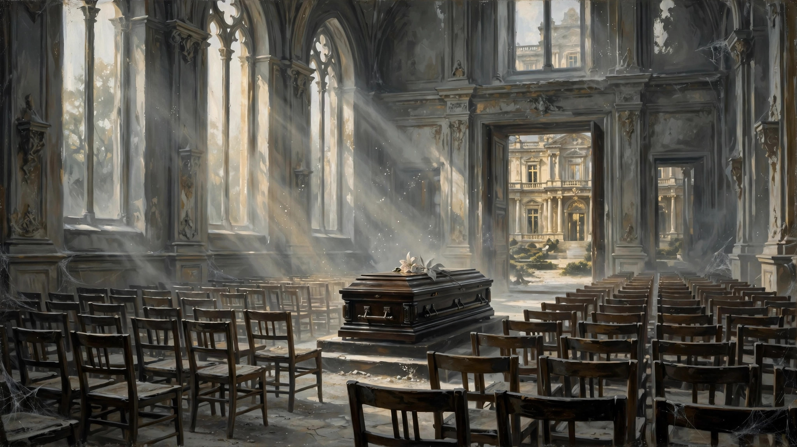

“为了爱梦一生”的男人
欢迎点击上方名片关注我的公众号。您的支持是我坚持原创的最大动力。
如果你以为本文说的是王杰，那么恭喜你答错了（同时暴露了你的年龄）。如果你看了前面一句问“王杰是谁？”，请继续阅读，不用管王杰了。
（以下是一篇原创旧文，略有修改）
对《了不起的盖茨比》(The Great Gatsby)一书及其作者斯科特·菲茨杰拉德仰慕已久，直到最近才利用碎片时间看完了本书（英文版）。看完不久后，听了历史播客梁波的一期关于本书（其实更多是小李子的电影）的一期播客。因为怕剧透，这个播客也是攒了许久，从2019年收藏直到昨天才听。播客的具体内容不讨论了，但其中嘉宾讨论了一个话题引起了我的思考：盖茨比为什么“了不起”？
其实此书内容比我想的要简单得多。很久以前读了个开头（同样是英文版），感觉作者词藻华丽，是个文思泉涌的才子型作家。就猜想故事内容一定很宏大深邃。于是自然就有了“此书有阅读门槛”的敬畏之心，也为我的拖延症找到了借口。结果读下来第一反应是“就这”？当然这不是贬义，而是意犹未尽。没想到故事这么简单，而又（奇怪地）这么令人回味。
一言以蔽之，此书就是一个男人“为了爱梦一生”的故事。
古往今来，描写痴情男人的作品多不胜数，盖茨比又凭啥这么让人难以忘怀？我觉得那是因为别人所谓的“痴情”和盖茨比的纯粹一比就相形见绌。盖茨比为了爱，不惜投入一生的精力。事业逆袭，成功挤进纸醉金迷的上流社会，本是很励志的人生故事。但他不图享乐，只为爱情。不管遭受多少误解，也不在乎所爱的人有无回应或回报。他始终追寻自己的爱，坚守着心中纯粹的爱情，一如其凝望着对岸的灯塔一般执着。
尽管故事讲述者和读者都为他的结局而感到惋惜和悲哀，但我想这个男人直到死之前内心都还是幸福的，因为他对爱情始终抱有希望。他死时还不知道他的一生中最爱（戴西）并没有选择他，更不知道他死后她连一朵花都没有送过，更不用谈出席他的葬礼了。当然，那些受过他恩惠的人们，那些没有请帖也好意思来他的别墅彻夜狂欢的人们，在他死后也没来出席他的葬礼，仿佛一切都没发生过一样。所谓人走茶凉，和你的金钱和地位其实没多大关系。人性如此罢了。

但是盖茨比即使知道了这些令人悲凉的身后事，也不会太在意吧。这正是他的“了不起”之处。“我”只为我自己而活，只为我心中的信念和希望而活，我活得纯粹、透彻、完美。我是一个“为了爱梦一生”的人。试问你们这些俗人，有几个能活到这个份上。你们凭什么可怜我？
作者的生平和盖茨比的结局一样令人唏嘘。这部代表作也是在作者死后多年才声名鹊起。这部作品也许不适合年轻读者，也许初读没有感觉。毕竟其故事平淡（尽管有些描写词藻华丽），而且是悲剧结局。但当你有了一定的人生阅历再来看这本书，相信你会有不同的感觉。人的一生很短暂，如果还要患得患失，不去追寻心中的梦，到头来会是多大的憾事啊。
我们大多数人可能做不到像盖茨比那么“了不起”，但时不时想想他的故事，也许对我们是一种有益的启发。这也是这部作品的长久魅力所在，它所体现的价值观会给我们带来真正的温暖和力量。
往期精彩文章：
战火中的美好人性
也许她的言情小说不是最好的，但她对古诗词的运用可谓登峰造极
一部电影里的人生
你以为的过气悲情励志歌手其实是幽默豁达的人生赢家